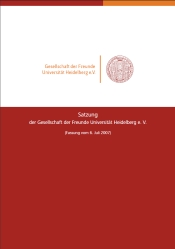

Die Gesellschaft der Freunde Universität Heidelberg e.V. hat es sich zur Aufgabe gemacht, gemeinsam mit ihren Partnern ein Netzwerk aufzuspannen, das in mehrfacher Hinsicht tragfähig ist: Es verbindet die Alumni miteinander und mit ihrer Universität, fördert den Erfahrungsaustausch der Universität mit ihren Freunden in Wirtschaft und Kultur und bündelt das ideelle und materielle Engagement für universitäre Projekte und Anliegen, die ohne Unterstützung von außen nicht realisierbar wären.
Die Gesellschaft wurde 2003 gegründet. Sie ist ein gemeinnütziger, beim Registergericht Heidelberg eingetragener Verein mit Unterabteilungen (Sektionen) auf Fakultäts- und Institutsebene.

Die Satzung ist die schriftlich niedergelegte Verfassung unseres Vereins. Sie benennt u. a. die Vereinsziele, die Aufgaben der Mitgliederversammlung und gibt in ihrer Präambel Auskunft über die Rechtsvorgänger der Gesellschaft.
Die Gesellschaft ist 2003 aus dem Zusammenschluss des Vereins der Freunde der Universität Heidelberg e.V. und der Universitäts-Gesellschaft Heidelberg e.V. entstanden.